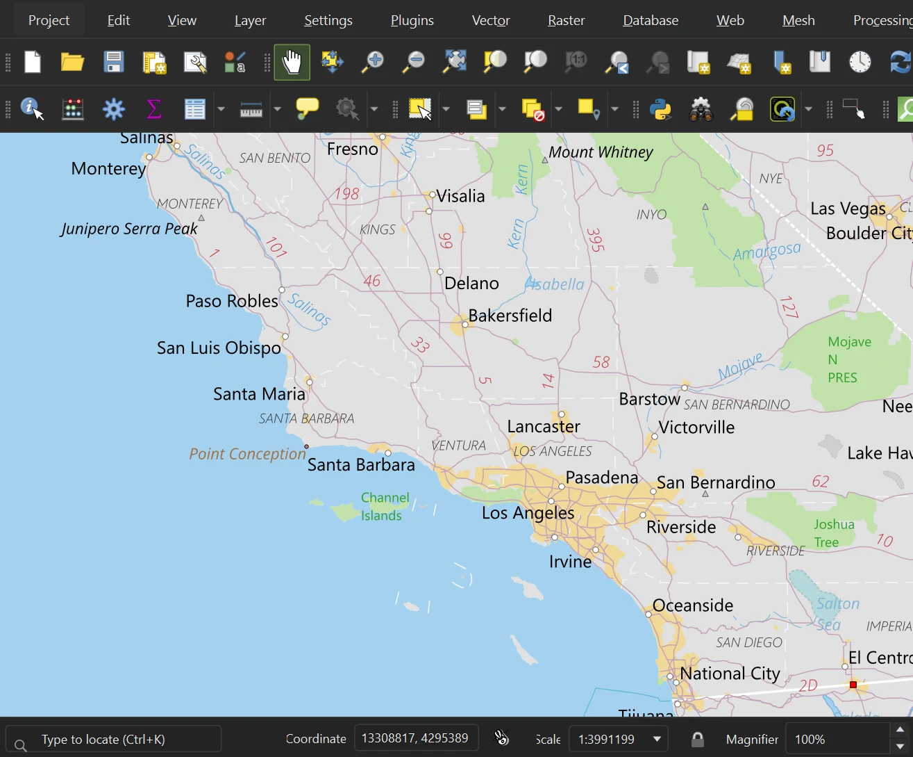
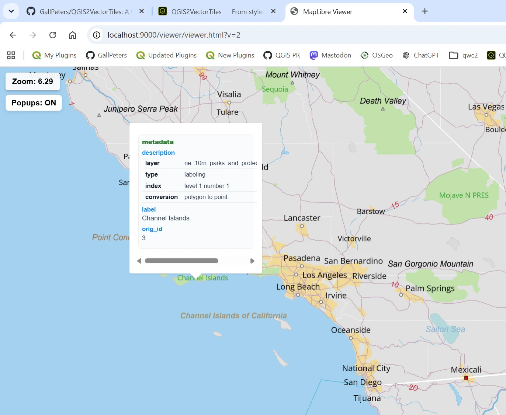
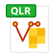

Large datasets
Sources are clipped to your extent, read once, cached between runs and processed in parallel.
QGIS2VectorTiles packs your styled project into lightweight vector tiles, a matching MapLibre style and a ready-to-use web viewer. No server, no internet connection, nothing else to install.
Compare
Same project, two places.
Drag the slider to compare QGIS Desktop with the web map it becomes.


QGIS Desktop Web browserFeatures
Design in the tool you know. QGIS2VectorTiles takes care of tiling, styling and packaging, and keeps what you see in QGIS on the web.
Sources are clipped to your extent, read once, cached between runs and processed in parallel.
Rule-based, categorized and graduated renderers, labels and geometry generators become tile-ready rules.
Data-defined properties are evaluated per feature and stored with the data, so every value renders exactly.
A standard QGIS Processing tool. Choose the extent, zoom range and viewer, then run.
Each layer is written only to its own zoom range, with only the fields its style uses.
The browser draws the tiles with MapLibre or OpenLayers. No map server, sharp at every zoom.
Runs on the Python and GDAL that ship with QGIS. No internet connection, nothing extra to install.
Vector tiles in MBTiles, a MapLibre GL style and a QGIS layer file: formats the web-mapping world reads.
Tap a feature for details.
How it works
Every step is open source. Select a module to see what it does and jump to its code.
How it works
One folder, ready to use.
Every run writes the tiles, the style and a ready-to-use viewer side by side.
Open it anywhere. A standalone web viewer and a .qlr layer are included, so the same tiles open in a browser and back in QGIS.
Gallery
Rendering capabilities and feature fidelity, straight from real exports.
Gallery
Styling in detail.
Expressions, transparency and complex line work, exported straight from QGIS.
Use cases
One export, three ways to use it.
Drop the MapLibre style into your web map client. No server processing or on-the-fly rasterization, just fast, sharp, fully styled vector tiles rendered natively.
Compatible with Vector Tiles and GL Styles.
Serve vector tiles through standard GIS infrastructure. Benefit from smaller payloads, faster response times, and a single source of truth for your styles.
Share a single styled layer file instead of dozens of datasets, projections, and dependencies. The complex multi-source project is collapsed with visuals baked in.

1× .qlr layerStandard QGIS layer definition format.
Install QGIS2VectorTiles from the official QGIS plugin repository. Free and open source, now and always.
Enjoying the plugin? Rate it on the QGIS plugin repository